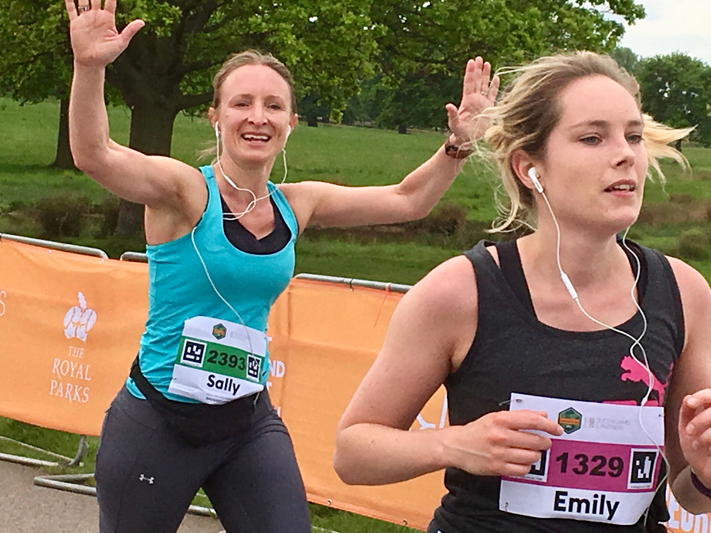
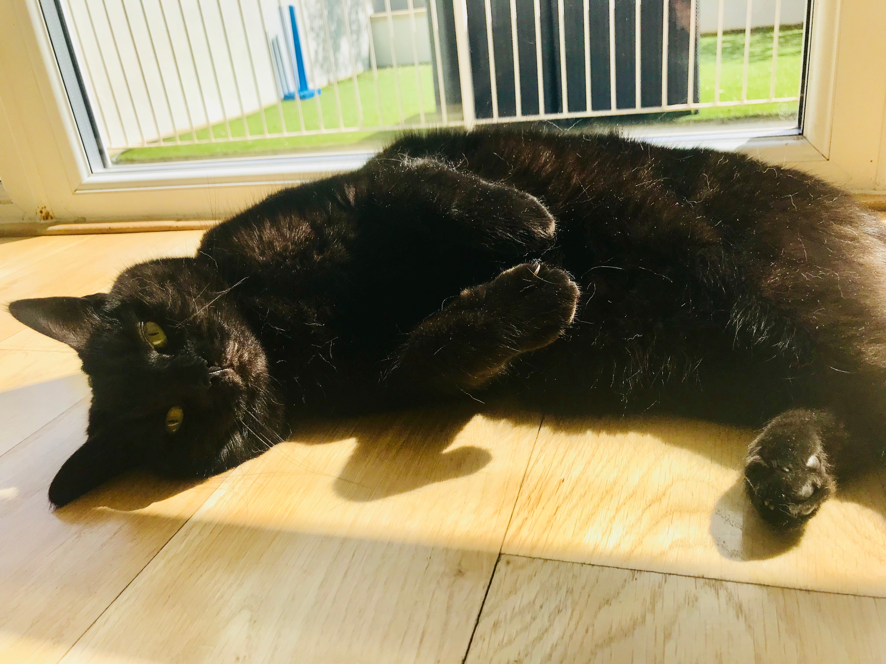
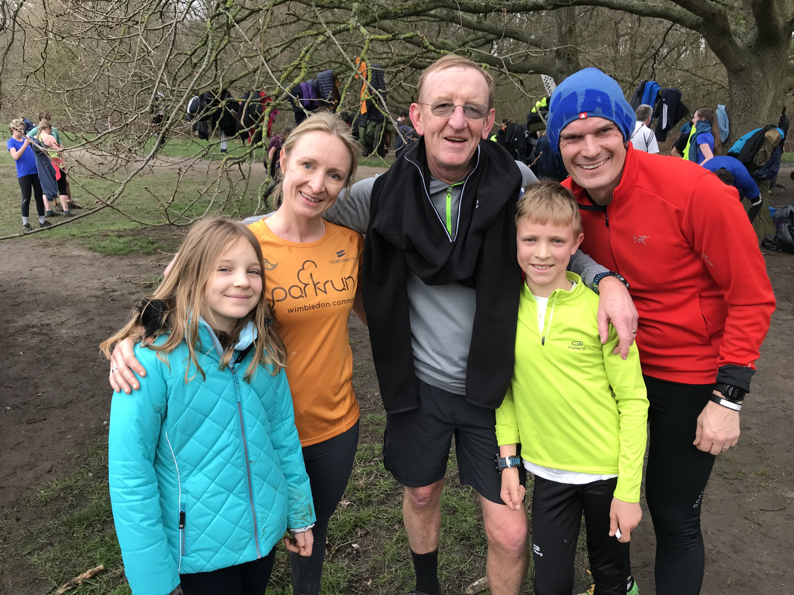

Sally Windle
Work experience
I have over fifteen years experience in graduate recruitment, diversity and CSR with large corporates such as EY, Citi and Accenture in London. Example roles:
- Graduate recruitment lead at Accenture
- Diversity projects and events for J.P Morgan, Cap Gemini and Linklaters
- CSR (Corporate Social Responsibilty) contact for charities of the year at BlackRock
In addition to this I have recently trained as a front end developer with CodeFirst:Professional Women so as to be able to build websites myself for my own work and for others.
Skills and projects I can help with
- Building websites
- Organising and hosting events
- Consultancy on diversity and CSR in the workplace
Interesting facts about me
- Keen runner and triathlete, recently participating in Windsor Olympic Tri and Hampton Court Half Marathon
- Regular runner and volunteer at Parkrun Wimbledon
- Recently trained as a front end programmer
- Mum to an eleven year old boy and nine year old girl
- Grew up in USA, Italy, Hong Kong and UK
- Love cats



Sally Atherton